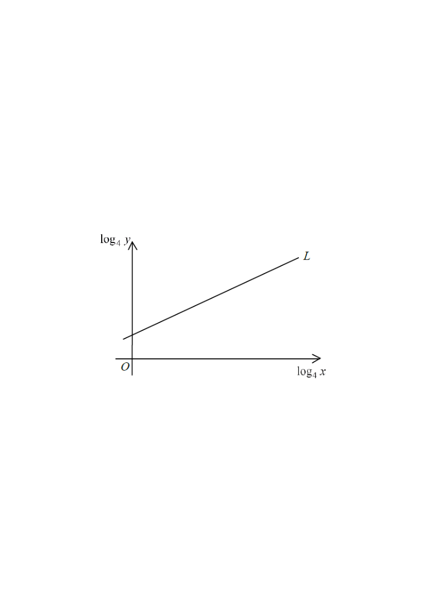

In the figure, the straight line $L$ shows the relation between $\log_4 x$ and $\log_4 y$.
It is given that $L$ passes through the points $(1,2)$ and $(9,6)$.
If $y = kx^{a}$, then
$k =$
A. $\dfrac{1}{2}$
B. $\dfrac{3}{2}$
C. $2$
D. $8$

Figure (original exam diagram)
1Read off the given information
The line $L$ (plotting $\log_4 y$ vertically against $\log_4 x$) passes through
$(1,2)$ and $(9,6)$. So the axis $Oy$ of the diagram is the $\log_4 y$-axis and
$Ox$ is the $\log_4 x$-axis. Let $X=\log_4 x$ and $Y=\log_4 y$.
Hint: treat $\log_4 x$ and $\log_4 y$ as ordinary variables — this turns a curved
relation into a straight line.
2Find the slope of $L$
Gradient of a Straight Line\(m=\dfrac{Y_{2}-Y_{1}}{X_{2}-X_{1}}\)Through \\((1,2)\\) and \\((9,6)\\) the gradient is \\(\\dfrac{6-2}{9-1}=\\dfrac{1}{2}\\), the index \\(a\\).
Using the two points $(1,2)$ and $(9,6)$:
$\Delta Y$
$\Delta X$
slope $m$
$6-2=4$
$9-1=8$
$\dfrac{4}{8}=\dfrac{1}{2}$
So $Y = \dfrac{1}{2}X + c$ for some constant $c$ (the $Y$-intercept).
Hint: a straight line on a log–log plot means $y = kx^{a}$ — the slope is the index $a$.
3Find the $Y$-intercept $c$
Substitute the point $(X,Y)=(1,2)$:
$2 = \dfrac{1}{2}(1) + c \;\Rightarrow\; c = 2 - \dfrac{1}{2} = \dfrac{3}{2}.$
Hence the equation of $L$ is
$\log_4 y = \dfrac{1}{2}\log_4 x + \dfrac{3}{2}.$
Hint: this intercept $c=\frac{3}{2}$ is exactly $\log_4 k$ — we will use it next.
4Convert back to the form $y = kx^{a}$
Product and Power Laws of Logarithms\(\log_{4}y=\log_{4}x^{1/2}+\log_{4}4^{3/2}\)Both terms are written as single logarithms base \\(4\\) so they can be combined into \\(\\log_{4}\\left(4^{3/2}x^{1/2}\\right)\\).
Use the laws of logarithms on $\log_4 y = \dfrac{1}{2}\log_4 x + \dfrac{3}{2}$:
$\log_4 y = \log_4 x^{1/2} + \log_4 4^{3/2}
= \log_4\!\left(4^{3/2}\,x^{1/2}\right).$
Hint: $\frac{1}{2}\log_4 x=\log_4 x^{1/2}$ and $\frac{3}{2}=\log_4 4^{3/2}$.
5Identify $k$ and $a$
Log–Log Linearisation\(\log y=\log k+a\log x\)A straight line on a \\(\\log\\text{–}\\log\\) plot means \\(y=kx^{a}\\), with gradient \\(a=\\dfrac{1}{2}\\) and intercept \\(\\log_{4}k=\\dfrac{3}{2}\\).
Comparing $y = 8x^{1/2}$ with $y = kx^{a}$:
$k = 8$ and $a = \dfrac{1}{2}$.
Hint: check with a point — when $x = 16$, $y = 8\sqrt{16}=32$, and
$\log_4 16 = 2$, $\log_4 32 = \frac{5}{2}$; the line gives $\frac12(2)+\frac32=\frac52$. ✓
Answer: D · $k = 8$ (and $a = \tfrac{1}{2}$, so $y = 8x^{1/2}$)
PRACTICESimilar question — try it yourself
Question. The line obtained by plotting \\(\log_{3}y\\) against \\(\log_{3}x\\) passes through the points \\((1,3)\\) and \\((5,7)\\). It is known that \\(y=kx^{a}\\). Find \\(k\\) and \\(a\\).
Show the worked solution
Step 1. Gradient: \\(a=\\dfrac{7-3}{5-1}=1\\).
Step 2. Intercept: using \\((1,3)\\), \\(3=1(1)+c\\), so \\(c=2\\).